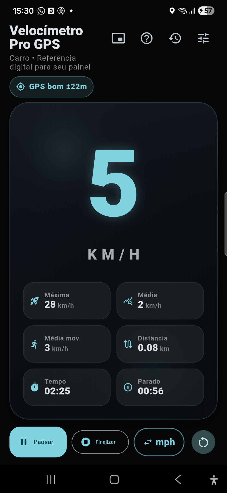
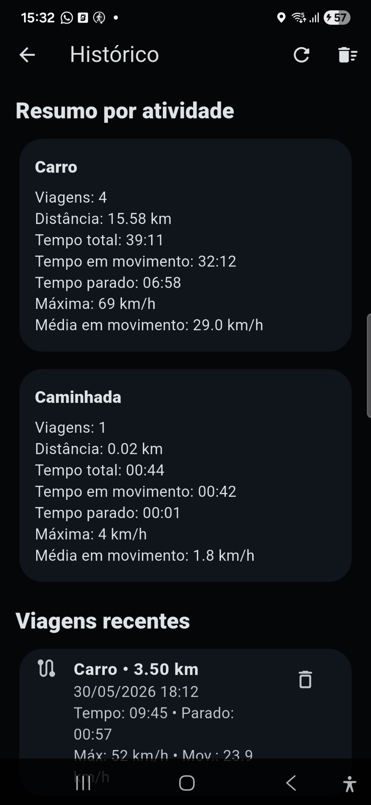

Velocímetro GPS/GNSS
Exibe velocidade estimada por GPS em números grandes, com suporte a km/h e mph.
Referência digital auxiliar por GPS/GNSS
Transforme seu smartphone em um velocímetro digital moderno para carros antigos, motos, bicicletas, jipes, veículos sem multimídia e atividades ao ar livre.
O app está em fase de testes de campo. A publicação oficial na Play Store será feita após validação.
Principais recursos
Exibe velocidade estimada por GPS em números grandes, com suporte a km/h e mph.
Use no painel em modo retrato ou paisagem, ou em janela flutuante compacta sobre outros apps.
Salve viagens, consulte distância, tempo, tempo parado, velocidade máxima e médias.
Escolha carro, moto, bicicleta, caminhada, corrida ou outro para ajustar a lógica de medição.
Ajuste pequenos desvios após comparar o app em velocidade constante.
Na versão atual, os dados de viagem e histórico ficam no aparelho e não são enviados a servidor próprio.
App real
Capturas reais do aplicativo em modo escuro, com velocímetro principal, histórico de viagens, resumo por atividade e ações de viagem.

